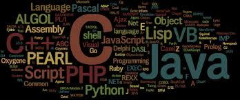
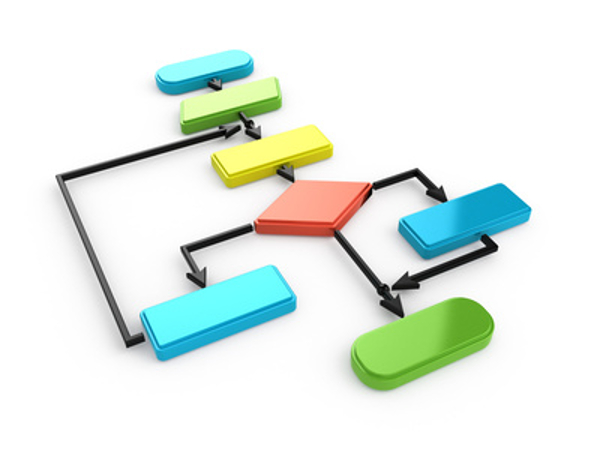
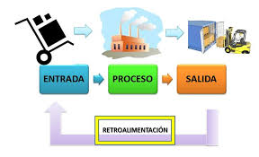
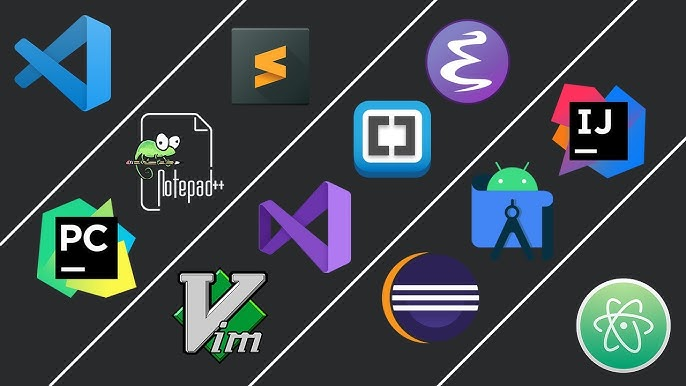

¿Qué es programar?
Programar es el proceso de escribir instrucciones que una computadora puede entender y ejecutar. Estas instrucciones se llaman código, y se escriben usando un lenguaje de programación.
Así como para hablar con una persona usamos el español o el inglés, para hablar con una computadora usamos lenguajes como Python, Java, C++, o JavaScript. La computadora no entiende el español directamente, por eso necesitamos estos lenguajes especiales.

¿Para qué sirve la programación?
La programación está en casi todo lo que usamos en el día a día. Cada aplicación en tu celular, cada página web que visitas, cada videojuego que juegas, fue creado por alguien que programó.
Con la programación podemos:
- Crear aplicaciones móviles y sitios web.
- Automatizar tareas repetitivas.
- Analizar grandes cantidades de datos.
- Desarrollar videojuegos.
- Controlar robots y sistemas inteligentes.
- Resolver problemas matemáticos o científicos.
¿Cómo piensa una computadora?
Una computadora no piensa como un humano. Sigue instrucciones de manera exacta, una por una, en el orden que se le indica. No puede adivinar qué quisiste decir si te equivocas: simplemente mostrará un error.
Por eso, al programar es importante ser muy preciso y ordenado. Cada instrucción debe estar bien escrita para que la computadora la pueda ejecutar correctamente.
La computadora trabaja con dos conceptos básicos a nivel de hardware: el 0 y el 1 (código binario). Pero gracias a los lenguajes de programación, nosotros podemos escribir en un lenguaje más cercano al humano y el compilador o intérprete lo traduce.
Tipos de lenguajes de programación
Existen muchos lenguajes de programación y cada uno fue creado con un propósito. Algunos son más fáciles de aprender para principiantes, otros están diseñados para tareas muy específicas.
| Lenguaje | ¿Para qué se usa? | Dificultad |
|---|---|---|
| Python | Inteligencia artificial, análisis de datos, scripts | Fácil |
| JavaScript | Páginas web interactivas, aplicaciones web | Media |
| Java | Aplicaciones de escritorio, Android, empresas | Media |
| C++ | Videojuegos, sistemas operativos, robótica | Difícil |
| HTML/CSS | Estructura y estilo de páginas web | Fácil |

¿Qué es un algoritmo?
Un algoritmo es una serie de pasos ordenados para resolver un problema. Antes de escribir código, los programadores primero piensan el algoritmo: ¿qué pasos hay que seguir para llegar al resultado?
Un ejemplo sencillo: el algoritmo para hacer un sándwich sería:
- Tomar dos rebanadas de pan.
- Untar mantequilla en una rebanada.
- Colocar el relleno encima.
- Poner la otra rebanada encima.
- Listo, el sándwich está hecho.
En programación es igual: antes de escribir código, primero se define el algoritmo paso a paso. Esto ayuda a no perderse y a escribir código más ordenado y eficiente.

Partes básicas de un programa
Todo programa, sin importar el lenguaje, suele tener las mismas partes fundamentales:
- Entrada: Los datos que el programa recibe del usuario o de otra fuente (teclado, archivo, sensores, etc.).
- Proceso: Lo que el programa hace con esos datos (cálculos, comparaciones, transformaciones).
- Salida: El resultado que el programa muestra o entrega al usuario (en pantalla, en un archivo, etc.).
Por ejemplo, un programa que suma dos números: recibe dos números (entrada), los suma (proceso), y muestra el resultado (salida).

Los errores en programación
Equivocarse al programar es completamente normal, incluso para los programadores más experimentados. Los errores en programación se llaman bugs y corregirlos se llama depuración o debugging.
Existen tres tipos principales de errores:
- Error de sintaxis: Cuando el código está mal escrito y el programa no puede entenderlo. Es como escribir mal una palabra en español.
- Error de lógica: El código se ejecuta sin problema, pero el resultado no es el esperado. El algoritmo estaba mal planteado.
- Error de ejecución: El programa falla mientras corre, por ejemplo al intentar dividir entre cero o abrir un archivo que no existe.
Aprender a leer los mensajes de error es una habilidad clave en programación. Al inicio puede ser frustrante, pero con práctica se vuelve más fácil.
Herramientas del programador
Para escribir y ejecutar código, los programadores usan varias herramientas:
- Editor de código: Donde se escribe el código. El más popular actualmente es Visual Studio Code (VS Code), que es gratuito y muy completo.
- Compilador / Intérprete: Traduce el código que escribiste al lenguaje que entiende la máquina.
- Terminal o consola: Permite ejecutar programas y ver los resultados en texto.
- Navegador web: Para probar páginas web y aplicaciones que funcionan en internet.
